At Manna Evangel Faith Assembly, we believe that education is not a
privilege reserved for a few, but a vital foundation every child
deserves. Guided by compassion and a deep commitment to community
development, the church has established a network of free schools
across the northern region of Nigeria, reaching children from
underserved and less privileged backgrounds. These schools are more
than just places of learning—they are centers of hope,
transformation, and opportunity. Many of the children enrolled come
from communities where access to quality education is limited or
completely unavailable. Through this initiative, Manna Evangel Faith
Assembly provides tuition-free education, moral guidance, and a
nurturing environment, empowering young minds to grow academically,
socially, and spiritually. Over the years, the church has expanded
its outreach to several communities, ensuring that no child is left
behind due to financial constraints. Our schools are currently
located in:
Billiri — Gombe State
Railway Area — Gombe State
Ayaba — Gombe State (Transferred)
Dandango — Bauchi State
Maius — Bauchi State
Zalaki — Plateau State
Pamlang — Plateau State
Fulani One — Plateau State
Fulani Two — Plateau State
Potiskum — Yobe State
Each of these schools stands as a testimony to the church’s
unwavering dedication to uplifting communities through education.
Beyond academics, students are taught values such as integrity,
discipline, love, and faith—preparing them not only for future
careers but for meaningful lives. The impact of this initiative
continues to grow as more children gain access to education,
discover their potential, and begin to dream beyond their
circumstances. Manna Evangel Faith Assembly remains committed to
expanding this vision, trusting God to reach even more communities
in need. Together, we are building a future—one child, one school,
one community at a time.
Dangoma and Mauis are located in the core interior of Bauchi state. These villages have no formal schools, and where schools exist, they are often understaffed, poorly equipped, and unable to retain trained teachers. Children may walk long distances to attend classes, discouraging consistent attendance, especially for girls. As a result, literacy rates remain low, and opportunities for upward mobility are limited. This educational gap perpetuates cycles of poverty and restricts awareness of health, civic engagement, and economic opportunities. To address this barrier we introduced free schools in those regions and equipped teachers to educate the children and upgrade their chances of survival.
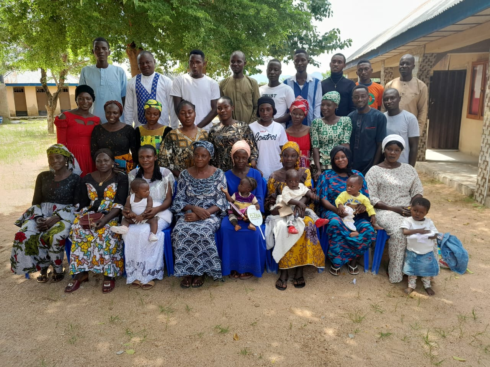
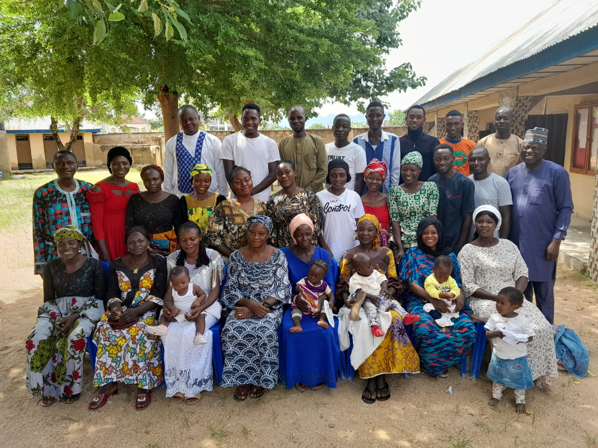
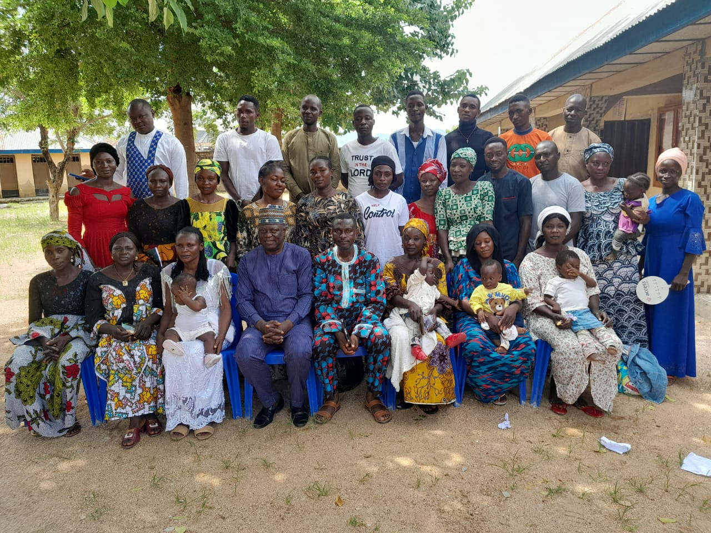
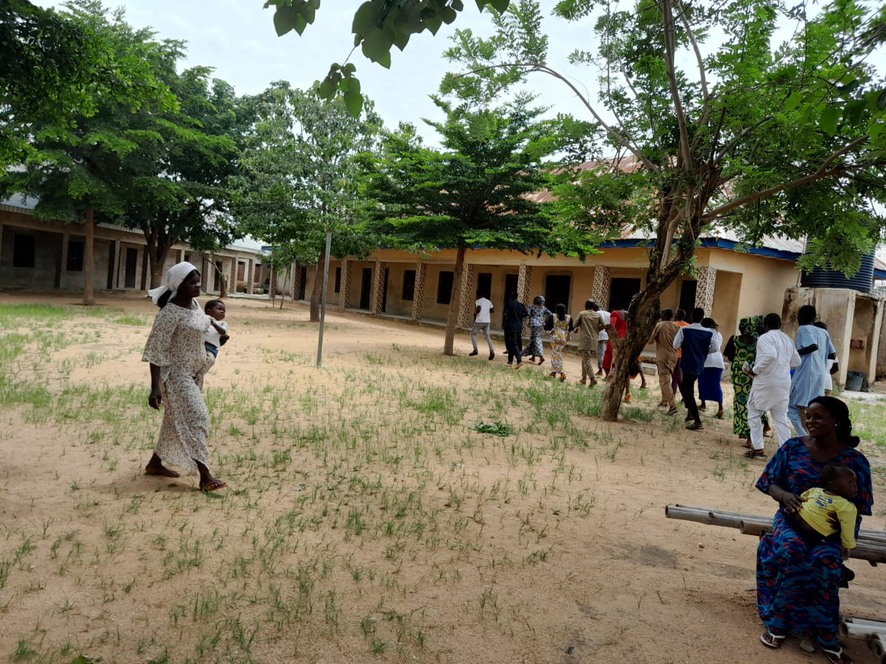
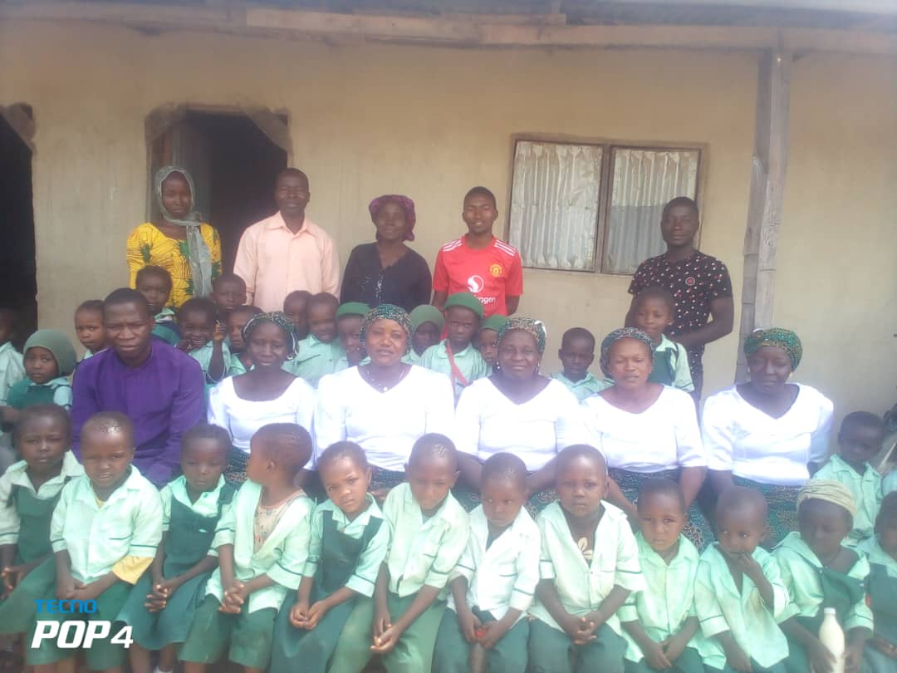
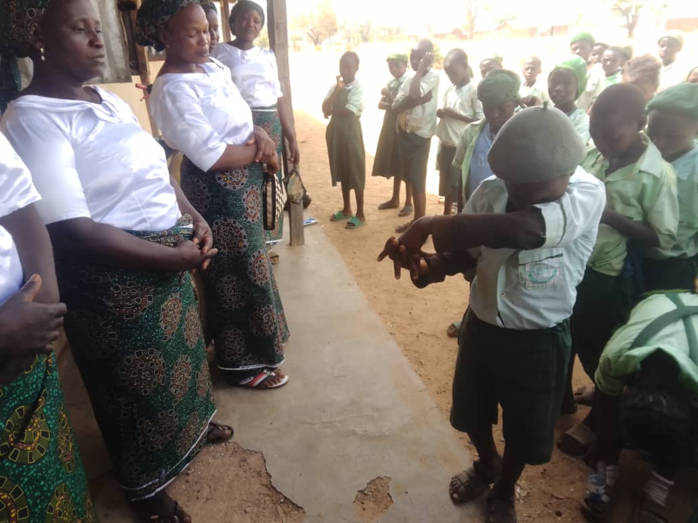
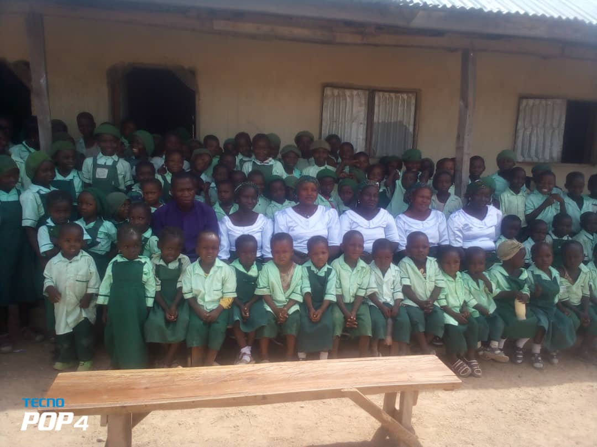
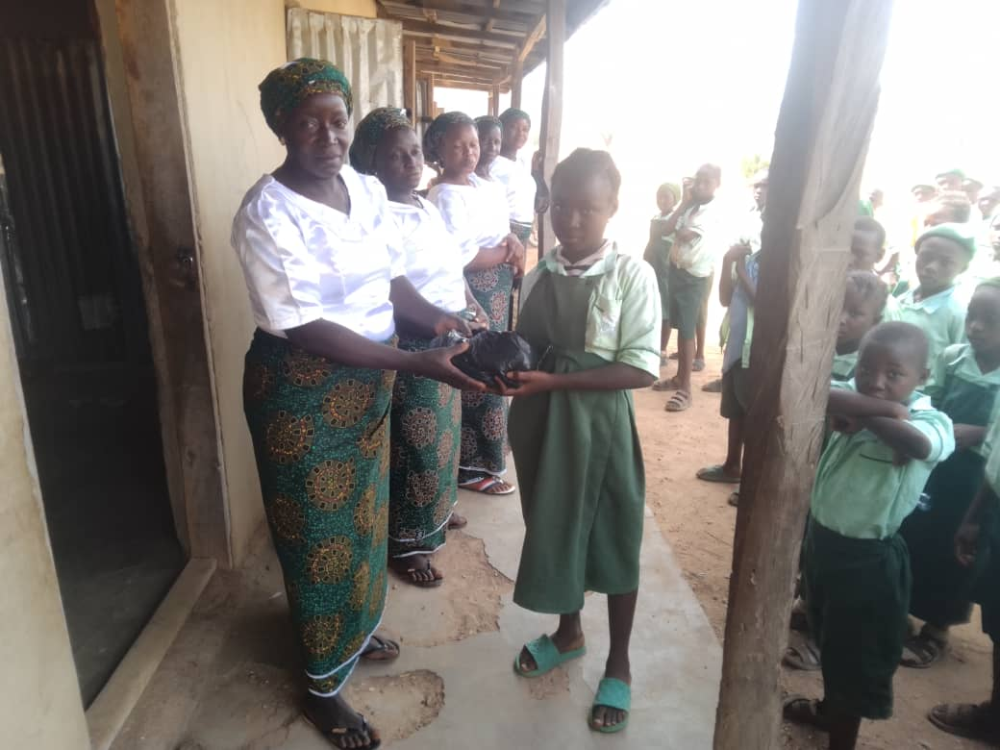
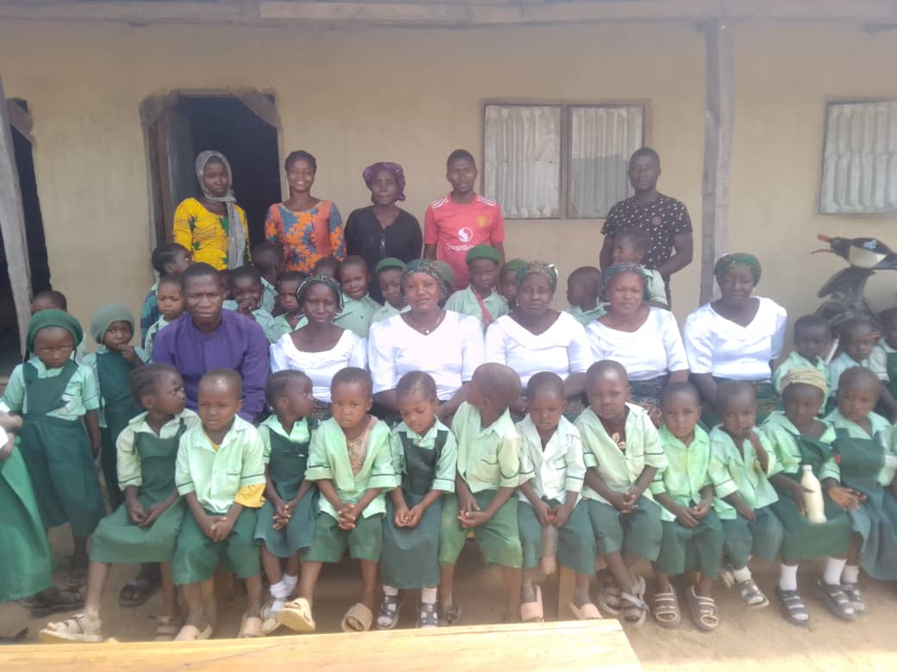
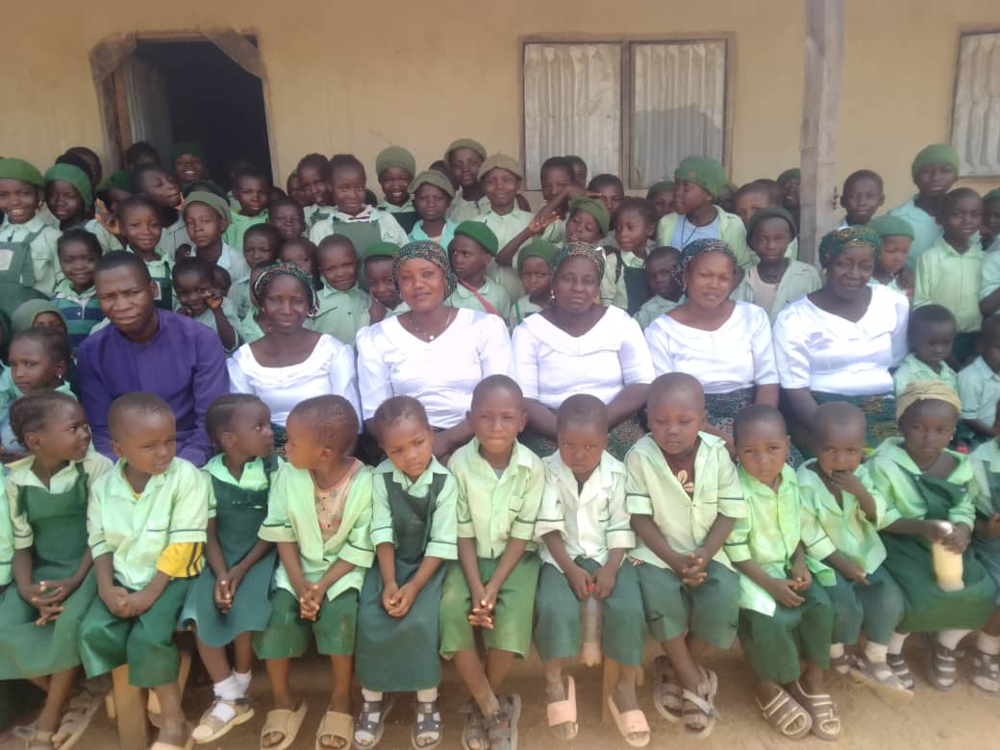
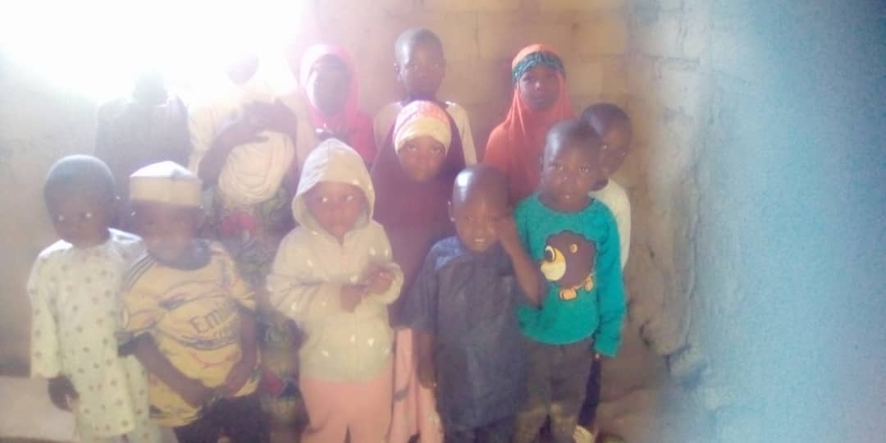
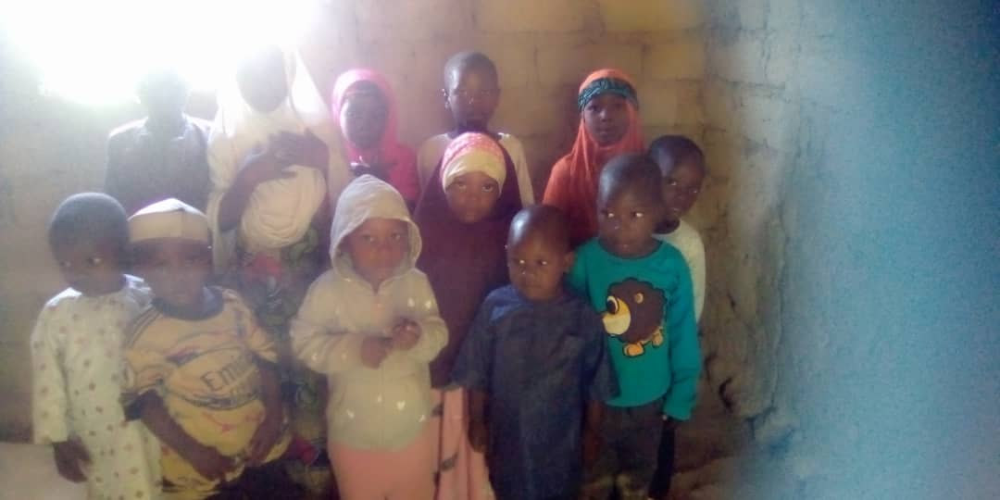
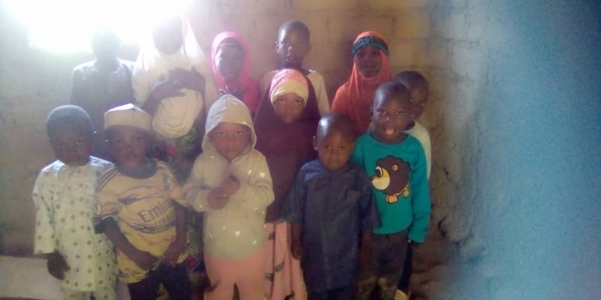
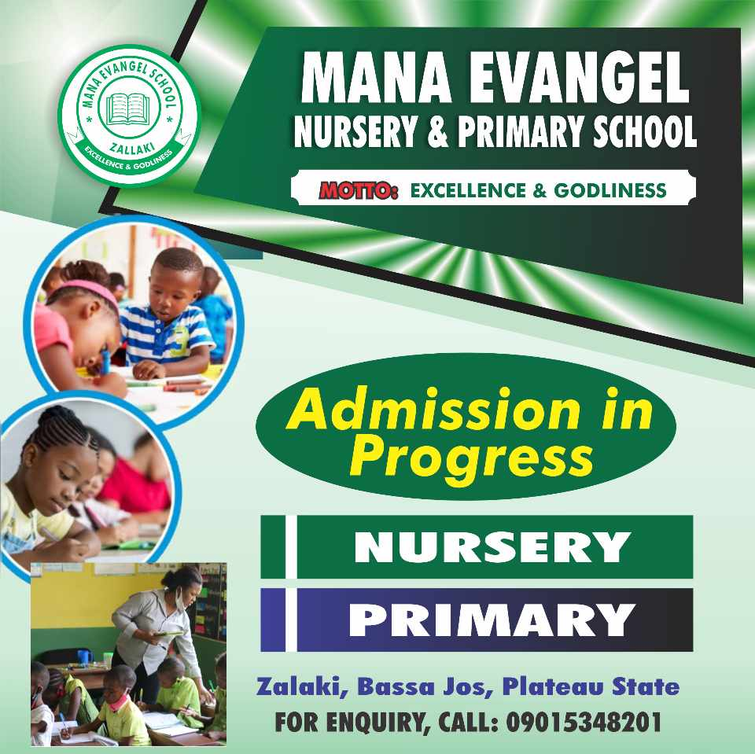
We invite you to join us on this journey of faith and discovery. Whether you are seeking spiritual nourishment, meaningful connections, or simply a place to belong, you are welcome here at Manna Evangel Faith Assembly. Together, let us continue to grow in grace and share the boundless love of God with the world
In our worship services, we create an atmosphere where hearts are stirred, souls are refreshed, and spirits are renewed. Worship at Manna Evangel Faith Assembly is characterized by authenticity and sincerity.
Baptism holds a central place in the spiritual journey of believers at Manna Evangel Faith Assembly. It symbolizes not only a public declaration of one's faith but also a profound spiritual transformation.
Exhortation plays a vital role in the life of the community at Manna Evangel Faith Assembly. It is the practice of encouraging, uplifting, and motivating one another to live out our faith boldly and faithfully.